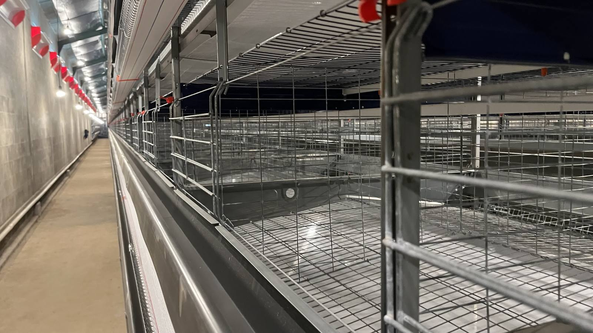

Type H vs Type A Chicken Cages

BAE's two main products — Type H and Type A — look similar but are built for different birds and climates. Picking wrong means wasted capacity. Here is the comparison.
| Spec | Type H | Type A |
|---|---|---|
| Bird type | Pullet / grower (young birds) | Layer (laying hens) |
| Tiers | 3-8 | 3-4 |
| Cell size | 60-65 cm | 40-45 cm |
| Climate | Controlled (closed house) | Hot / tropical, natural ventilation |
| Automation | High: feeding, drinking, manure, lighting, environment, IoT | Configurable: manure + feeding, 2nd-floor option |
| Material | Q235 hot-dip galvanized / Zn-Al alloy steel; Zn-Al-Mg frame | |
When to Choose Type H?
Choose Type H when raising pullets and wanting uniform growth through automatic environmental control at every stage — from chicks to growers. Inward-swing doors ease catching; hopper trolleys spread feed fast and evenly.
When to Choose Type A?
Choose Type A for layers in high-temperature regions. Natural ventilation plus maximum capacity per meter, reinforced PVC feed troughs, and a manure scraper option (closed house) or manure belts to carts. A second-floor option suits open houses.